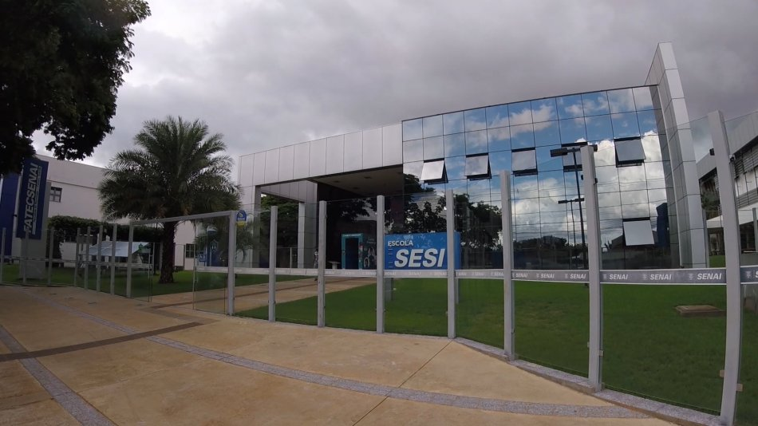

Missão
O Colégio Sesi MS forma líderes atuantes nas comunidades em que está inserido, tornando-se um referencial na formação de profissionais empreendedores, criativos, éticos e inovadores.
Autonomia e Criatividade
O Colégio Sesi da Indústria incentiva o prazer de aprender, e o prazer de aprender a aprender. Através de sua metodologia de ensino dinâmica e inovadora, os alunos tornam-se mais responsáveis e comprometidos com os estudos. O foco na educação transformadora é constante e busca propiciar para seus alunos um caminhar autônomo, propondo expressar suas ideias de maneira criativa.
Benefícios e impacto gerado
O Ensino Médio do SESI proporciona benefícios aos adolescentes ao desenvolvê-los integralmente, como o estímulo à criatividade, desenvolvimento cognitivo, emocional e social, responsabilidade, respeito e educação. Através das aulas atrativas e interativas, o estudante é o protagonista do seu processo de aprendizagem. Nesta etapa final da educação escolar, os estudantes saem preparados para a vida profissional.
